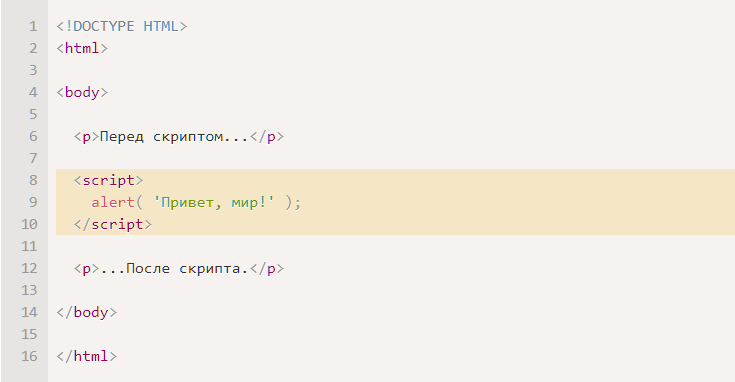
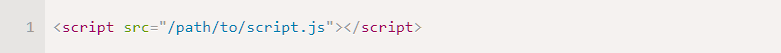
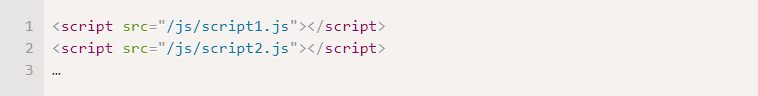

Введение в JavaScript!
Привет, мир!
В этой части учебника мы изучаем собственно JavaScript, сам язык.Но нам нужна рабочая среда для запуска наших скриптов, и, поскольку это онлайн-книга, то браузер будет хорошим выбором. В этой главе мы сократим количество специфичных для браузера команд (например, alert) до минимума, чтобы вы не тратили на них время, если планируете сосредоточиться на другой среде (например, Node.js). А на использовании JavaScript в браузере мы сосредоточимся в следующей части учебника.Итак, сначала давайте посмотрим, как выполнить скрипт на странице. Для серверных сред (например, Node.js), вы можете выполнить скрипт с помощью команды типа "node my.js". Для браузера всё немного иначе.
Тег «script»
Программы на JavaScript могут быть вставлены в любое место HTML-документа с помощью тега script.
Для примера:
Тег script содержит JavaScript-код, который автоматически выполнится, когда браузер его обработает.
Современная разметка
Тег script имеет несколько атрибутов, которые редко используются, но всё ещё могут встретиться в старом коде:
Атрибут type: <script type=…></script>
Старый стандарт HTML, HTML4, требовал наличия этого атрибута в теге <script…>. Обычно он имел значение type="text/javascript". На текущий момент этого больше не требуется. Более того, в современном стандарте HTML смысл этого атрибута полностью изменился. Теперь он может использоваться для JavaScript-модулей. Но это тема не для начального уровня, и о ней мы поговорим в другой части учебника.
Атрибут language: <script language=…></script>
Этот атрибут должен был задавать язык, на котором написан скрипт. Но так как JavaScript является языком по умолчанию, в этом атрибуте уже нет необходимости.
Обёртывание скрипта в HTML-комментарии.
В очень древних книгах и руководствах вы сможете найти комментарии внутри тега <script>, например, такие:
Этот комментарий скрывал код JavaScript в старых браузерах, которые не знали, как обрабатывать тег <script>. Поскольку все браузеры, выпущенные за последние 15 лет, не содержат данной проблемы, такие комментарии уже не нужны. Если они есть, то это признак, что перед нами очень древний код.
Внешние скрипты
Если у вас много JavaScript-кода, вы можете поместить его в отдельный файл.
Файл скрипта можно подключить к HTML с помощью атрибута src:
Здесь /path/to/script.js – это абсолютный путь до скрипта от корня сайта. Также можно указать относительный путь от текущей страницы. Например, src="script.js" или src="./script.js" будет означать, что файл "script.js" находится в текущей папке.
Можно указать и полный URL-адрес.
Для подключения нескольких скриптов используйте несколько тегов:
Итого
1. Для добавления кода JavaScript на страницу используется тег <script>
2. Атрибуты type и language необязательны.
3. Скрипт во внешнем файле можно вставить с помощью <script src="path/to/script.js"></script>.
Нам ещё многое предстоит изучить про браузерные скрипты и их взаимодействие со страницей. Но, как уже было сказано, эта часть учебника посвящена именно языку JavaScript, поэтому здесь мы постараемся не отвлекаться на детали реализации в браузере. Мы воспользуемся браузером для запуска JavaScript, это удобно для онлайн-демонстраций, но это только одна из платформ, на которых работает этот язык.